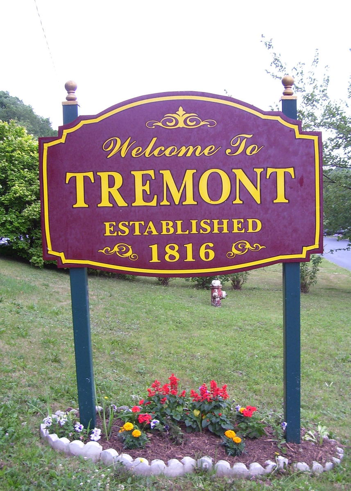

New Enterprise Stone & Lime Co., Inc. was awarded the bid for the 2025 Road Project for Middle Creek Road and Union Street. Work is set to begin Spring 2025.
Ashes and Yard Waste will be picked up on Mondays, beginning April 14, 2025.
Tremont, Pennsylvania, nestled in the scenic landscapes of Schuylkill County, is a historic borough with a rich heritage. Located in the northeastern part of the state, Tremont offers a charming small-town atmosphere and serves as a reminder of Pennsylvania's unique history.

Mayor: Gerald Fasnacht
Council President: William Ochs
Council Vice President: Brian Eisenacher
Council Members: James G. Schiebley,
Melody Strickler,
and Roger Adams
Tax Collector: Kathleen Krammes
Solicitor: Atty Shane Hobbs
Health & Safety Officer: Lewis Moyer
Emergency Management Coordinator: James Scheibley
Code Enforcement Officer: Marty Sowers,
LightHeigel & Associates
Engineers: LightHeigel & Associates
Police: State Police, Schuylkill Haven Barricks
Secretary & Treasurer: Shea Lucas
Road Master: James Scheibley
Road Laborer: Lewis Kohr
Part-Time Seasonal Laborer: David Barry
Custodian: George Hoverocker
Librarian: Bonnie Wiscount Marks
Library Aide: Dorothy Rowe-Feugeas